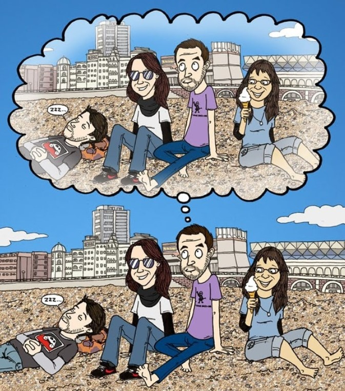
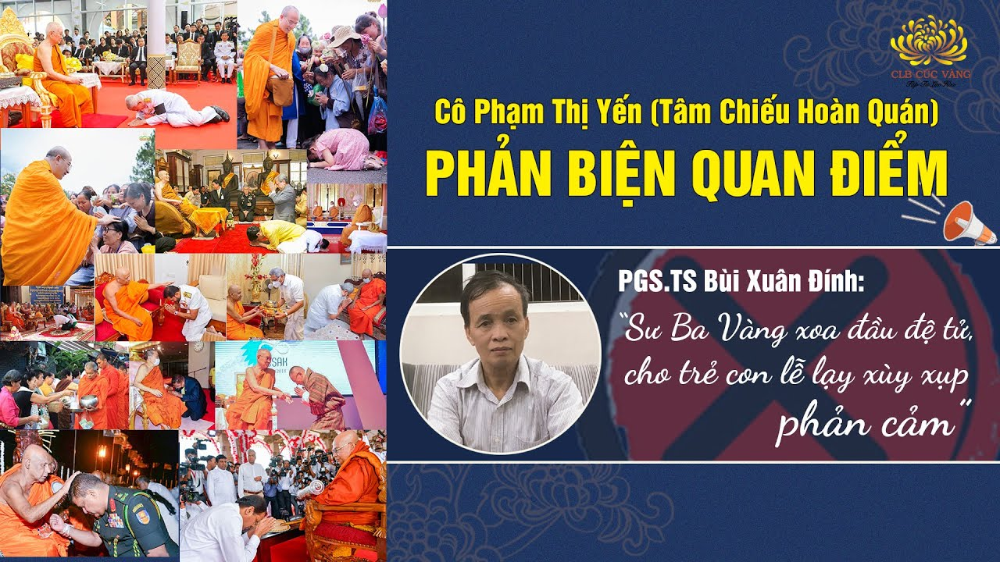
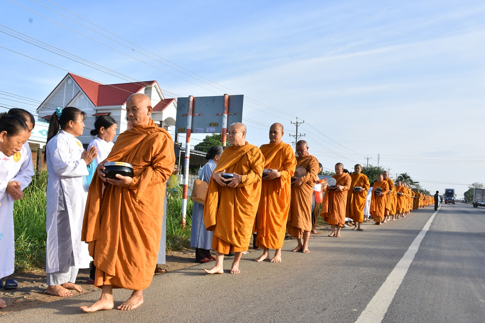
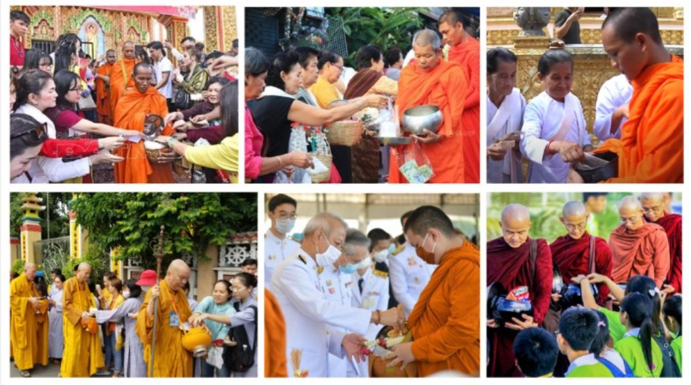

Bồ đề đạo tràng tại Ấn Độ - Nơi linh thiêng bậc nhất trên thế giới
Bồ đề đạo tràng tại Ấn Độ được coi là trung tâm tâm linh của vũ trụ, là một bằng chứng sống động rằng Đức Phật có thật.
Chi tiết3 bí mật chưa từng được hé lộ phía sau màn trình diễn thời trang nhà Trần chùa Ba Vàng
Từ người mẫu cho đến người làm trang phục, đạo cụ, hay cả người thực hiện trực tiếp đều là những “tay mơ”. Đã có lúc, tôi tưởng như chương trình khó mà diễn ra suôn sẻ.
Chi tiết[Video] Thực tập thiền hành: Sự tĩnh lặng của tâm
Chúng ta thực hành thiền để chú tâm được vào bước chân, đến một lúc nào đó cảm thấy nhẹ nhàng, dễ chịu mà trong Trạch Pháp giác chi gọi là khinh an.
Chi tiếtTri ân Cô - Người “Nhà giáo” luôn tận tâm, tận lực vì hạnh phúc của chúng con
Trong dòng cảm xúc tri ân hướng về ngày Nhà giáo Việt Nam 20/11, nương vào duyên lành này, các Phật tử trong CLB Cúc Vàng - Tập Tu Lục Hòa, CLB Tuổi trẻ Ba Vàng và CLB La Hầu La đã cùng nhau dâng lên Cô chủ nhiệm Phạm Thị Yến - người “Nhà giáo” đặc biệt của các Phật tử những đóa hoa tươi thắm với tấm lòng biết ơn sâu sắc.
Chi tiết[Video] Sư Phụ - Bậc ân sư cao quý trong cuộc đời chúng con!
Đối với chúng con, Sư Phụ là người Thầy vượt trên hết tất cả các vị Thầy, đưa giáo án của Đức Phật - giáo án cao quý nhất cho chúng con…
Chi tiếtNhững mẩu chuyện nhỏ kể về tâm tri ân rất đặc biệt của Cô Phạm Thị Yến đến Thầy của mình
Tâm tri ân của Cô đến Sư Phụ luôn thường trực mọi lúc, mọi nơi, trong từng lời nói, hành động khiến rất nhiều Phật tử khâm phục và noi theo.
Chi tiết[Video] Thực hành thiền trên cát - Quán niệm vô thường trong từng bước chân
Thực hành thiền trên cát sẽ rất khó, dễ chông chênh và chao đảo; vì vậy phải hoàn toàn chú ý đến bước chân của mình.
Chi tiết[Video] “Hạnh phúc vì có Cô” - Bài hát thay lời tri ân gửi tới người Thầy đặc biệt
Lắng nghe khổ đau, thế gian phiền não, dũng mãnh cầu đạo, chẳng màng lợi danh. Chắt chiu duyên lành, giúp người thoát khổ
Chi tiếtNếu muốn sống đời thảnh thơi, công việc thuận lợi: Nhất định phải tham gia một khóa tu yên lặng
Thu xếp công việc, rời bỏ mạng xã hội, tạm xa những cuộc vui quán xá ồn ào,... tôi nghĩ, một tuần này là một trong những quyết định đúng đắn nhất của mình.
Chi tiếtTập thiền tứ niệm xứ: Phật tử sẽ hối tiếc nếu không đăng ký tham gia
Chắc chắn, khi biết được lợi ích quá đỗi quý giá của khóa tu thiền, các Phật tử sẽ đăng ký tham gia ngay để không bỏ lỡ cơ hội đặc biệt này
Chi tiết[Video] Tri ân Cô - Người phụ nữ bình thường nhưng rất đỗi phi thường
Hướng tới ngày phụ nữ Việt Nam 20/10, đại diện cho toàn thể Phật tử trong Câu lạc bộ Cúc Vàng, Câu lạc bộ Tuổi trẻ, Câu lạc bộ La Hầu La cùng những người có lòng yêu kính đối với Cô chủ nhiệm Phạm Thị Yến ở khắp mọi nơi trên thế giới - xin được gửi tới Cô những lời tri ân từ tấm lòng.
Chi tiết
Deja Vu: Giải mã hiện tượng cảm giác quen thuộc
Deja Vu là hiện tượng khiến người trong cuộc có cảm giác đã từng thấy điều gì trước đó. Hiện tượng này có lợi hay có hại và những cảm giác quen thuộc đó liệu có đúng hay không? Câu trả lời tại bài viết này
Chi tiếtÍt nhất một lần trong đời, phải đến Tứ Thánh tích với một người “dẫn đường” như Cô
7 ngày ở miền đất Phật, là vô vàn những câu chuyện ý nghĩa, những cảm xúc giá trị,... khiến trong tâm tôi có những thành tựu nhất định.
Chi tiếtTop 10 câu nói cực hay khiến bạn muốn khởi hành ngay về miền đất Phật
Chắc chắn, 10 câu nói ý nghĩa về Tứ Thánh tích dưới đây sẽ khiến quý vị được tăng trưởng tín tâm, lòng tin vững chắc nơi Tam Bảo và phát sinh mong muốn được khởi hành về miền đất Phật vào một ngày không xa…
Chi tiếtPhương pháp đối trị Nghiệp tham ngủ
Đối trị Nghiệp tham ngủ bằng cách nhận diện được gốc của nghiệp tham ngủ là trong kiếp xưa làm người, khinh thường người khác, đố kỵ với việc tốt, gây chia rẽ; không lắng nghe và sửa lỗi, hay ác hại.
Chi tiếtKumanthong là gì? Sự thật rùng mình và cách hóa giải
Kumanthong là một loại bùa ngải xuất phát từ Thái Lan. Chúng thường được làm dưới dạng búp bê nữ, búp bê nam,... và được người ta lấy những linh hồn (gọi là thần thức hoặc ngạ quỷ) chết từ khi còn trong thai (gọi là thai nhi) gá vào.
Chi tiếtBài phản biện dưới đây sẽ chứng minh quan điểm cá nhân của ông Bùi Xuân Đính vô lý và lầm tưởng như thế nào!
Chi tiết
Vậy hành động quý Thầy xoa đầu và Phật tử quỳ lễ sai phạm và phản cảm chỗ nào? Việc phó giáo sư kết tội chùa Ba Vàng như vậy có đúng sự thật hay không? Xin mời quý vị cùng tìm hiểu qua bài viết dưới đây!
Chi tiết
Sớt bát cúng dường theo pháp luật và pháp Phật
“Khất thực” , “Sớt bát cúng dường” là những thuật ngữ có vẻ không thông dụng trong đời sống thường nhật nhưng với những người theo Đạo Phật và quan tâm với Phật giáo thì không hề xa lạ,
Chi tiết
Nếu chư Tăng làm việc đúng với Pháp luật, đúng với lời Phật dạy mà quý vị chê bai, chỉ trích hay lên án vô căn cứ thì đó là sự phỉ báng, đe dọa đến quyền tự do tín ngưỡng - tôn giáo được Nhà nước công nhận và bảo hộ. Trong thời đại thông tin tiến bộ, hãy học để trở thành số đông thông thái, sống và tôn trọng sự thật!
Chi tiếtSự thật chư Tăng chùa Ba Vàng nhận tiền cúng dường: Dư luận có bị dắt mũi?
Từ khi Đức Phật còn tại thế, việc chư Tăng nhận tịnh tài của tín chủ cúng dường là hoàn toàn bình thường và tương tự với thời đại ngày nay.
Chi tiếtRơi nước mắt trong lễ rửa chân cha mẹ mùa Vu Lan báo hiếu 2022 chùa Ba Vàng
Cha mẹ - hai đấng song thân đã cho chúng ta thân mạng, hình hài; vất vả ngược xuôi, vật lộn với đời để cho ta manh áo, miếng cơm, con chữ,… Cha mẹ sẵn sàng đánh đổi cả cuộc đời để nuôi dưỡng, chăm sóc, chở che và ân cần chỉ dạy cho các con.
Chi tiếtTri ân hai cụ thân sinh Sư Phụ Thích Trúc Thái Minh - Nguồn khởi sinh tâm hiếu
"Nhân mùa Vu lan, chúng con kính chúc ông bà sống lâu và luôn là tấm gương và điểm tựa để mỗi mùa Vu lan chúng con hướng về.
Chi tiết3 bước để thành tựu được việc phát tâm Bồ đề
Muốn thành Phật không có con đường nào khác là phải phát Bồ đề tâm kiên cố, lập các hạnh nguyện sâu dày, Vậy để phát tâm Bồ đề chân thật và thực hành Bồ đề hạnh được thành tựu, người đệ tử Phật cần thực hiện những bước nào?
Chi tiếtVề già ứng xử thế nào để con cháu không bất hiếu?
Vậy khi về già, những người làm cha mẹ nên ứng xử như thế nào để con cái không bất hiếu? Xin mời quý bạn đọc cùng tìm hiểu qua chia sẻ của Cô Phạm Thị Yến (Tâm Chiếu Hoàn Quán) trong bài viết dưới đây!
Chi tiếtHướng dẫn nhân dân, Phật tử đăng ký quy y Tam Bảo tại chùa Ba Vàng
Hướng dẫn nghi thức quy y Tam Bảo chi tiết nhất dành cho những ai muốn trở thành Phật tử để nương tựa và tu học theo giáo Pháp của Đức Phật; từ đó được lợi ích, hạnh phúc và an vui.
Chi tiếtTam Bảo là gì? Những điều cần biết về quy y Tam Bảo
Quy y Tam Bảo là việc đầu tiên cần làm nếu muốn trở thành người đệ tử Phật, “Quy” là quay về, “y” là nương tựa. “Quy y” là quay về nương tựa. “Tam” là ba, “Bảo” là quý báu. “Tam Bảo” được hiểu là “ba ngôi báu”, bao gồm Phật Bảo, Pháp Bảo, Tăng Bảo.
Chi tiếtNửa vòng Trái đất từ Canada về chùa Ba Vàng: Sức hút mãnh liệt của Sư Phụ, Cô và lễ Phát Bồ đề tâm
Trước cửa phòng khách số 2 chùa Ba Vàng lúc 11h30 ngày 19/6/Nhâm Dần, một nhóm Phật tử đứng bồi hồi
Chi tiếtPhương pháp đối trị tâm Mặc cảm về ngoại hình
Các bài nên xem: Phương pháp đối trị tâm Ngã mạn Phương pháp đối trị tâm Đố kỵ Phương pháp
Chi tiết